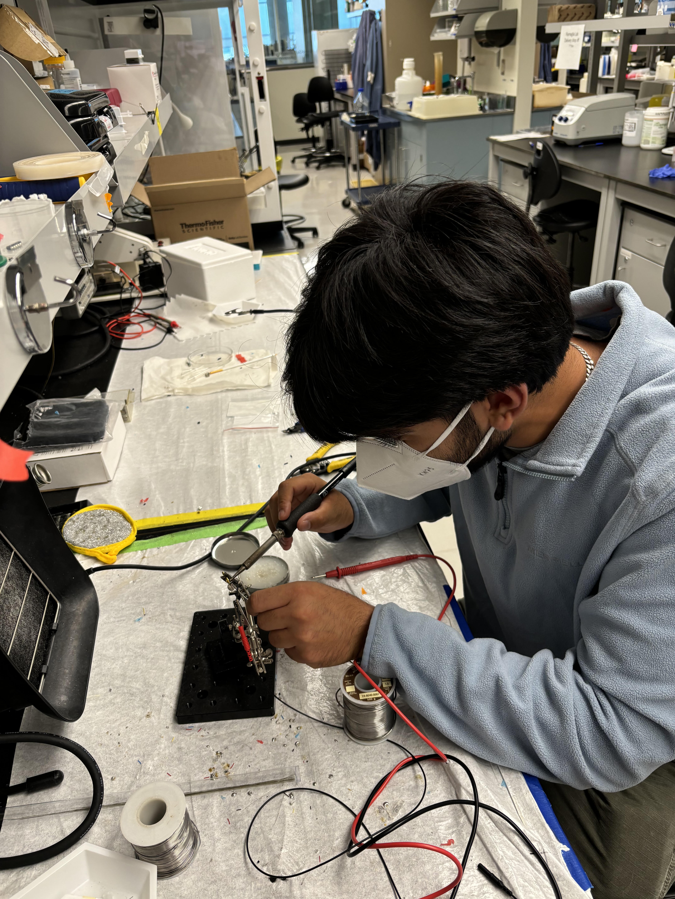
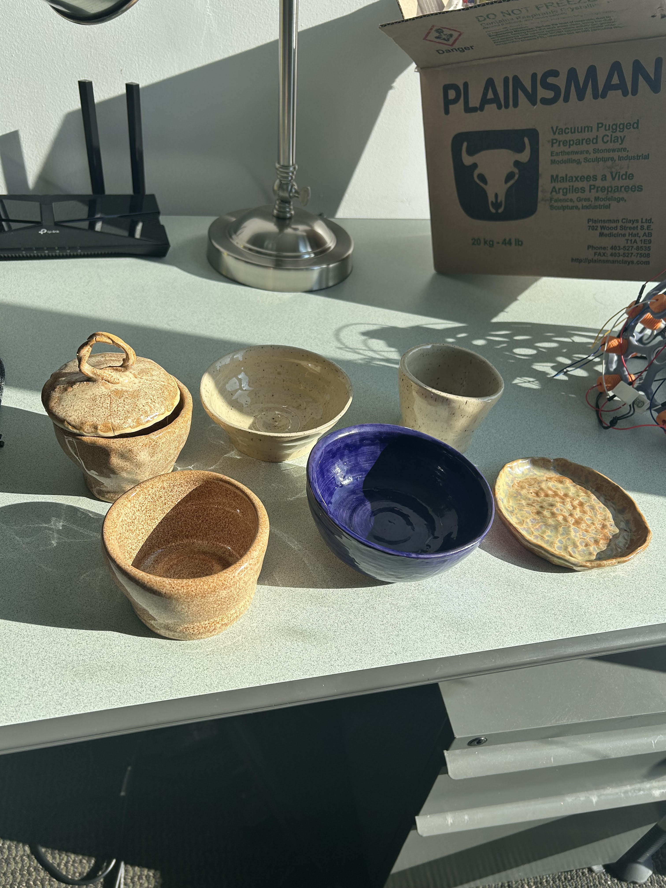
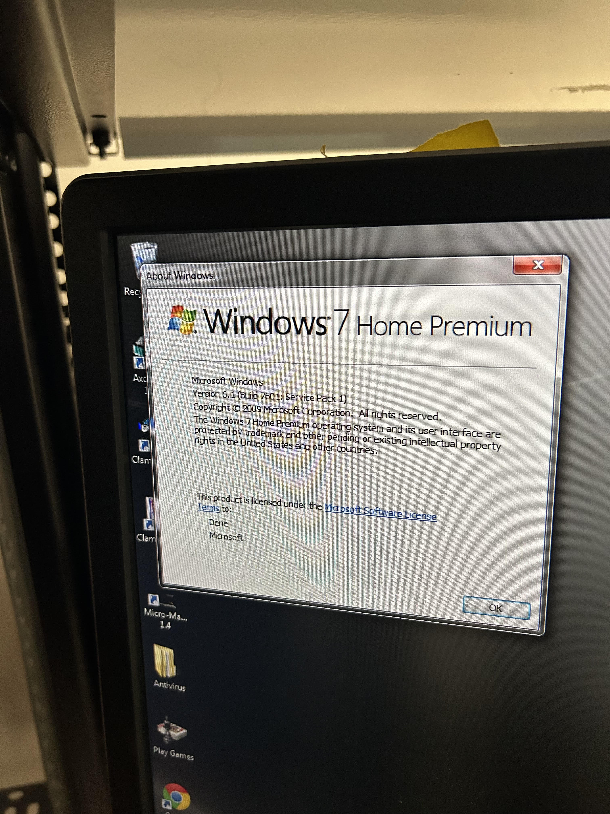

Overview
Thus far during my time here, I've worked on developing several pieces of software for the lab to enable easier detection and analysis of various neural events alongside some simple analysis and embedded systems work.
Current and previous work
- The Multielectrode Array Population-Level Event (MAPLE) detection software I developed addresses the current gap of robust detection and automatic analysis of population level events from MEA recordings. If you'd like to learn more, check it out on my Github!
- To decrease the tediousness of manual labeling of interictal epileptiform discharges (IEDs) from raw EEG recordings, my amazing coworker and I developed a platform to streamline loading and labeling IEDs alongside built in evaluation of an IED detection algorithm against the ground truth. This one is also on my Github!
- [In progress] In order to enable concurrent ephys and camera monitoring of animals with intracranial EEG, the same amazing coworker and I set up the SPI connection from a neural ephys chip (quite a cool toy) to a STM32 microcontroller and finally networked it using UDP to a visualization window with useful features including stim and seizure timestamps.
Other Learning
-
Aside from the software-based work, I've had the privilege of observing several
surgeries, learning how to solder, fixing extremely old (windows 7 and XP old) computers,
and making some pretty amazing pottery.


